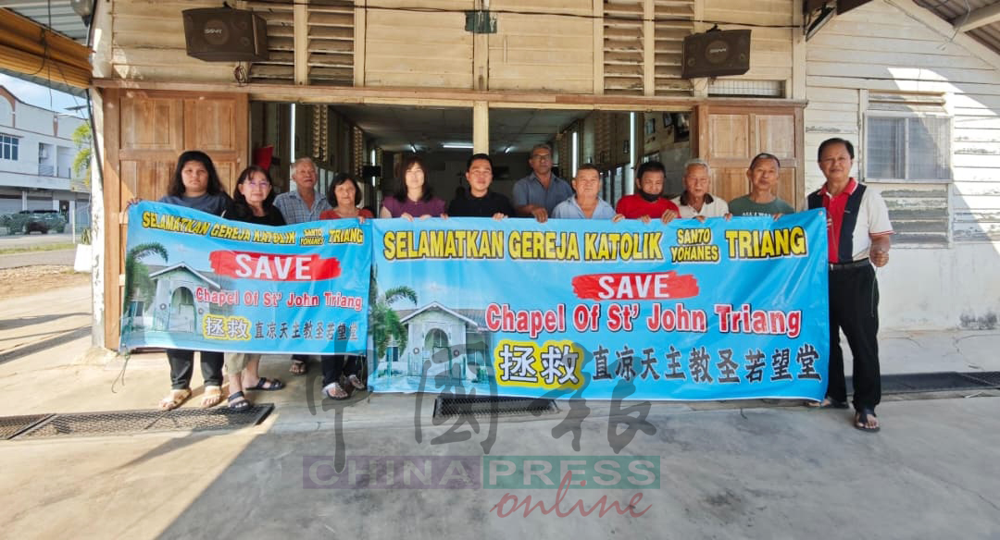
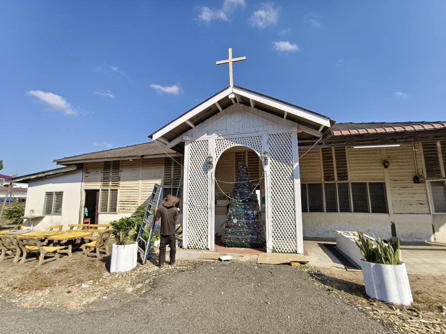
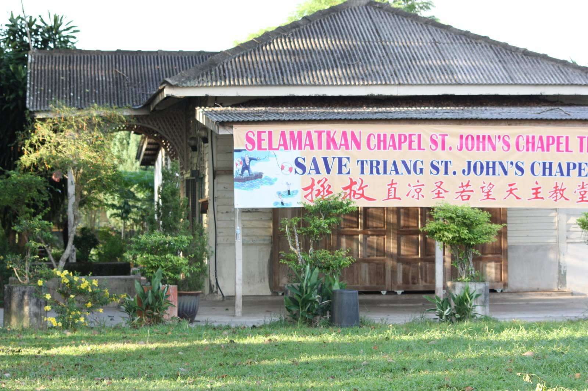
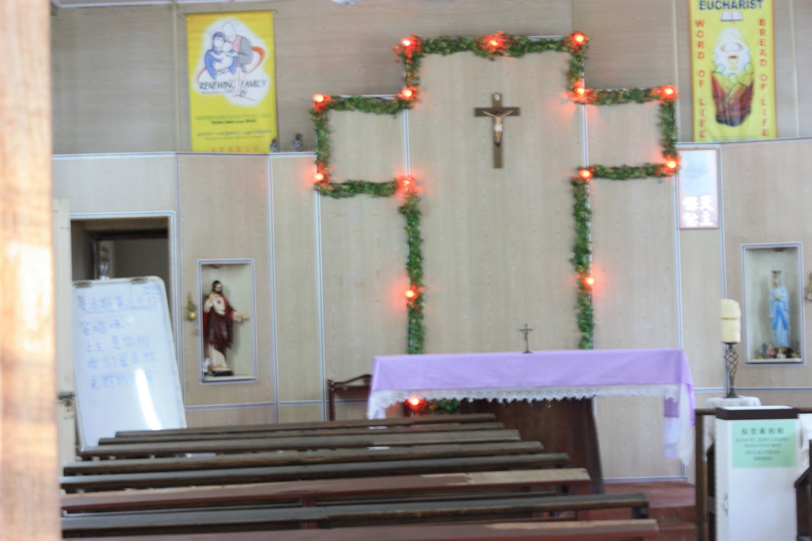
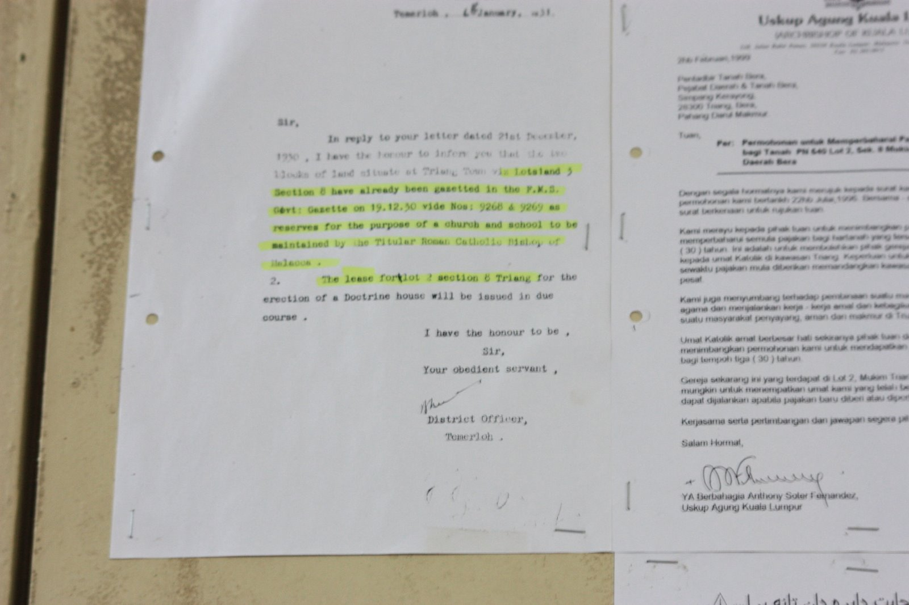
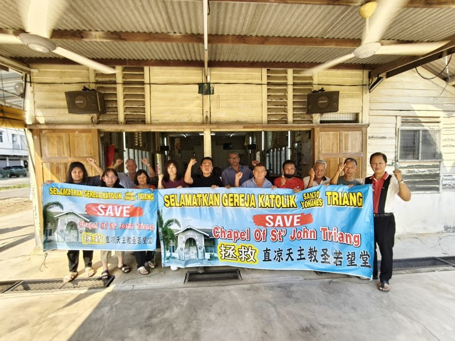

QUESTION 01
为什么偏偏是 Lot 2？
1931年，第一段和第三段已宪报；第二段只有租约。1955年续期被拒，2000年再次被拒。教堂偏偏建在第二段。
已知：三块地的宪报状态不同；第二段从未完成宪报。未知：1955年拒续的正式理由、是否有内部文件、是否曾提出替代方案。
直凉圣若望堂：从英殖民时代的一纸地契，到2025年的一封清空令。教堂还在，圣诞灯饰还在；只是那块地的名字，从来不完全属于它。
圣若望堂位于彭亨州百乐县直凉（Triang），是百乐县的一个华人新村小镇，位于彭亨州东部。这座教堂的华文名通常写作「圣若望堂」，部分媒体写作「圣诺望堂」；英文名是 Chapel of St John, Triang。它隶属吉隆坡总教区（Archdiocese of Kuala Lumpur），是文德甲（Mentakab）永援圣母堂（Church of Our Lady of Perpetual Help）的附属小堂。[21]
本报告尽量保留原报道的用字与引述；不同媒体对同一人物的译名（如「汤马斯」与「特仁斯」）并不统一，正文以「特仁斯神父（Fr Terrance Thomas）」为主，并在人物志中注明。
2025年11月30日，是律师函上的最后期限。期限过后两天，教堂仍在那里。12月2日，神父、理事和教友在门前拉起横幅；横幅上写着「拯救直凉天主教圣若望堂」。
2025年11月底，直凉圣若望堂接到发展商律师的正式函件，要求教堂必须在11月30日前「全面清空」。消息传来时，教友正在布置圣诞装饰。星洲日报写道，一纸指示「如冷风般吹散了节日气氛」，让教友陷入焦虑与无助，也唤起他们十六年前教堂被逼迁的噩梦。[1]
12月2日，教堂主席林子杰（Patrick Lim Chee Kiat）、副主席蔡高毅、副秘书廖嘉美、秘书陈美玲，连同特仁斯神父（Fr Terrance Thomas）与多名理事，在教堂前召开记者会。教会说，已按照吉隆坡总教区的指示，正式致函彭亨州务大臣，要求把有关土地归还教会管理，让约500名教友能够继续在安全、合法的地方进行宗教活动。总教区的律师也已致函州务大臣，希望协商取回这片土地。[1][2][3]

记者会上，教会把矛头指向一块拖了近百年的地。林子杰说，教堂早在1926年成立，地段有三片土地；1931年英殖民政府把第一段和第三段纳入宪报，分别作为宗教和学校用途，并在宪报内公布第二段土地也将纳入宪报。但第二段——也就是教堂所在的那一块——只有租赁协议，而且从1955年起就不再获准更新。[1]
「2009年，突然有发展单位表示已经收购教堂土地。经过教友们的和平抗议，此事被带到州行政议会讨论。之后在州务大臣的带领下，通过将公布该地段宪报作为宗教用途，当时也通知百乐县长，不过拖到今天仍未有正式宪报出炉。」林子杰说，这次突然接到发展商要求清空的指令，再次让他们感到不安。[1]
直凉州议员兼彭亨州行政议员梁耀雯受询时说，她早在2025年5月便接到教堂理事会的求助，希望协助确保教堂土地保留为宗教用途。她说，自己已第一时间向州务大臣传达，州务大臣当时给予正面回应，强调此事必须妥善处理；她仍在积极跟进，「希望能够帮助到教堂」。发展商则对媒体表示，暂时不回应教会的说法。[1][3]
988的新闻标题直接写：「百年教堂被令清空 彭州政府受促介入防商业侵占」。报道综合南洋商报的内容，强调教会要求州政府介入，防止宗教地被商业发展侵占。[24]
这不是一间教堂第一次接到「清空」或「拆除」的消息。十六年前，2009年2月，百乐县署曾发信要求拆除教堂；同年5月，教堂管理员被警方传召问话；6月，拆迁危机一度迫在眉睫。后来威胁暂缓，但土地问题从未解决。[10][13][15]

如果把这件事简单写成「州政府要拆教堂」，会漏掉一半真相；但如果因此说州政府没有责任，也不符合事实。更准确的说法是：州政府是那块地的最终权力者，也是最直接有能力把「承诺」变成「宪报」的一方。它有时是施压者，有时是协调者，有时只是沉默者。而教会，只能一次又一次地把同一份文件、同一张旧照片、同一个请求，带到同一扇门前。
它是信仰场所，也是学校、避难所、幼儿园和穷人的厨房。直凉几代人的出生、婚礼、葬礼，都在这座木建筑里留下过痕迹。
圣若望堂位于直凉新村甘榜巴鲁路（Jalan Kampung Baru），地址是28300 Triang, Pahang。它是一座木造小堂，没有宏伟的立面；门前有几棵老树，屋身是木板，屋顶是锌片。教会传统以1926年为建堂年；也有报道说，1926年之前建筑就已经存在。无论哪一年，它都是直凉最老的宗教建筑之一。[1][3][21]
教堂的地段由三片土地组成，一字排开。第一段地上是幼儿园，第二段地上是教堂，第三段地是教堂前的道路。1931年1月6日，淡马鲁县署发出一封公函，说明第一段和第三段已经宪报，分别作为教堂与学校保留地；第二段的租赁协议「将适时颁发」，用于建造教义所。[11]
独立前是英校，独立后改为幼儿园。直凉最早的学前教育起点之一。
教堂本体所在。只有租赁协议；1955年申请续期被拒，2000年再次被拒。
1931年已宪报为宗教用途，今天是一条穿过地段的道路。
这张「三块地」的拼图，是整件事的钥匙。第一段和第三段有宪报，第二段没有。教堂偏偏建在第二段。于是，一座在地方上服务了近百年的教堂，在法律文件上却一直像一个「占住者」。[1][11]
1955年，租约到期，教会申请续期被拒。关于地税，林子杰说教会缴到1955年；查尔斯·赫克托在2009年的记录则说，政府继续收地税直到1966年左右。此后，教会多次申请更新租约或申请地契，都没有结果。2000年，百乐县土地局再次拒绝。[1][10]
但教堂的用途从未中断。二战日军攻入马来半岛时，它是居民的避难所；水灾时，它是灾民收容所。独立前，这里办过英校，老师有外国人、印度人和华人；早上在华校上课、下午到教堂读英校，是许多直凉人的共同记忆。独立后，英校不被承认，改为幼儿园，成为直凉最早的幼儿园。1958年前后，教堂每月两三次派发饼干和牛奶给居民；六七十岁的直凉人至今记得。[1][22]



1941年，教友陈中肯与黄凤菊在教堂举行婚礼。那张黑白婚照由后人保存下来，成为教堂历史最具体的证据之一。陈美玲说，先祖曾在教堂结婚，「虽然两人已经作古，但当时拍摄的婚照就是历史的见证，也是家族回忆的根源」。[1]

黄桂兰（66岁）说，小时候是先祖父母带她来教堂，如今她带孙儿来，已经经历了五代。十多岁时，她晚上走路来教堂学唱圣歌，指导老师是总教区派来的卓小姐。「那时代没什么消遣娱乐，如今想起非常怀念。这里充满着许多人的回忆，如果消失了，大家肯定会伤心和觉得可惜。」[1]
今天，这座教堂约有500名教友，包括百乐县的公务员教友。它不只是一座乡村小堂，也是许多家庭的信仰锚点。2026年是教堂的百年；林子杰说，希望能够传承下去。[1][4]
宪报（gazette）和地契（title）不是同一件事。一块地可以被宣布为宗教保留地，却仍然没有把产权或长期使用权交给教会。圣若望堂的困境，正在这两者之间。
要理解这场争执，先要分清两个词。宪报是政府在公报上公布某项土地用途、保留地或行政决定的动作；地契是土地所有或使用权的凭证。一块地可以「被宣布为宗教保留地」，却仍然没有把产权或长期使用权交给教会；反过来，一块地也可以有地契，却与宪报用途冲突。
圣若望堂的情况是：第一段和第三段在1931年已宪报；第二段只有一份「将适时颁发」的租约承诺。1955年，租约到期，续期被拒；2000年，再次被拒。于是，教堂在法律上一直没有一个稳定的土地身份。它继续使用那块地，继续做礼拜；但它的存在，始终依赖一种没有写进地契的默许。[1][10][11]
2008年，直凉华小争取校旁1.1英亩空地做草场。2008年2月，州政府把该地地契批给发展商；随后，校方的「第二目标」——也就是圣若望堂现址——的地契也批给同一发展商。2008年6月，发展商在空地动工。[18]
这段历史必须说清楚：2008年8月17日的千人请愿，直接诉求是华小草场，不是教堂。但教堂现址是州政府考虑的替代校地之一。教会代表在洽谈中提出，若要教堂让地，除赔偿空地外，必须在新址重建教堂。因此，教堂从一开始就不是旁观者，而是这场土地博弈的一部分。[17][18]
2009年，教会突然被告知土地已被收购。教友和平抗议，事件被带到州行政议会。据林子杰2025年的说法，州务大臣主导通过将该地段宪报为宗教用途，并通知百乐县长；但「拖到今天仍未有正式宪报出炉」。[1]
这里出现了一个关键矛盾。2025年12月的多篇报道都说，该地段「已获政府冻结指示，明确列为宗教用途」，其状态与文件「亦刊登于宪报」；但同一场记者会上，主席明确说正式宪报没有出炉。两种说法并不一致。[1][2][3]

这不是文字游戏，而是本案的核心：如果宪报已经完成，为什么发展商还能发清空令？如果宪报没有完成，媒体所说的「宪报」又是什么文件？
公开资料无法回答。我们没有取得地契、宪报原件或土地局检索报告；教会展示的文件，是1930年代的公报和来往书信。媒体所称的「冻结地段」，可能是土地用途冻结、发展准证条件、或某份宪报草案，也可能只是对1931年旧宪报的延伸解读。没有原件，无法判断。[1][9]
另一个矛盾是地主身份。2009年，长期关注此案的律师查尔斯·赫克托在博客写道，教堂所在地的新地主是彭亨州经济发展机构（Perbadanan Kemajuan Ekonomi Negeri Pahang，PKNP），一个州政府机构；但2008年的中文报道说，地契批给发展商帝达有限公司（其首席执行员为陈亚民）；2025年的报道只说「发展商」，没有具名。[9][19][1]
三者可能是同一条产权链的不同阶段：州机构先持有，再交由发展商联营；也可能不是。没有土地检索，无法定论。可以确定的是：州政府是批准土地用途、批准地契、完成宪报的那一方。十六年来，教会一再要求它把「承诺」变成文件；它没有做到。


横幅、特别弥撒、警察问话、政治人物介入。这不是一场突然爆发的冲突，而是一个社区在文件、推土机与选票之间，尽量把教堂保下来的过程。
这场抗争不是从2025年开始的。2008年，直凉华小争取校旁空地做草场；州政府把地批给发展商，教堂现址也被卷入。学校、教堂、发展商，三方的命运从此缠在一起。[18]
2008年8月6日，百人和平请愿；8月17日，千人请愿。直凉三大政党——马华、民政、行动党——放下成见，在场一起喊「我们要草场」。请愿原定下午5时开始，未到5时，直凉草场前已聚集超过千人。5时15分，疑为发展商职员的人驾车驶入现场，双方爆发肢体冲突；发展商座驾被打破大镜，数名职员受伤。警方出动镇暴队（FRU）驱散人群。行动党州议员梁金福和直凉村长邓福乐随后到警局报案，在警局门口又遭人推撞、警告；邓福乐头部被殴打流血。[17]

请愿之后，土地争议没有解决。2009年2月，教堂接到百乐县署拆除教堂的信件。[10]4月19日，教堂成员到警局报案；[26]教堂外和直凉镇上出现横幅，呼吁保留教堂。[28]5月17日下午4时，教堂举行特别弥撒；教友穿黄衣，其他州属的教会也有人来声援。弥撒后有茶点和分享，查尔斯·赫克托讲宗教自由。[12][13]
5月22日，警方传召教堂管理员尚克劳德·卢尔德神父（Fr Jean-Claude Lourdes）到直凉警察局问话。天主教英文周刊《先锋报》（Herald Malaysia）在5月30日报道了这件事。[8]
报道说，神父下午2时30分报到，等到4时才开始被问话；问话的是一名便衣女警，他相信对方是政治部（Special Branch）人员。问话持续45分钟。问题包括：他的家庭背景、有没有犯罪记录、是否参与任何政党、是否涉入偏差教义或行为、5月17日那场宗教自由演讲的内容、他作为神父的收入、教堂捐款的数额与用途。报道还说，这项传召的指示「据称来自全国警察总长」；神父的感觉是，对方是在执行「上面的指示」。[8]

这不是一般的土地纠纷问话。它问的是信仰、言论、组织与金钱。查尔斯·赫克托在博客里写道：「看着这些问题，我确信这只是纯粹的恐吓。吓他们……让他们停止拯救圣若望堂的努力。」[13]
神父后来对《先锋报》说，即使那块地上不是天主教教堂，而是清真寺或神庙，他也会支持保留，因为那里有历史价值，是直凉人的重要地标。[8]
6月，拆迁危机一度逼近。11月，威胁暂缓。查尔斯·赫克托写道：州政府「暂时不做什么」，所以拆除的威胁暂时不在；但这不解决问题，「问题像一把达摩克利斯之剑，悬在使用者头上」。他呼吁把土地直接批给教会，哪怕只是一英亩左右的小地。[14]
2009年4月23日，马华南麦区州议员刘震林建议州政府成立「非回教宗教协调理事会」，处理非穆斯林宗教课题；行动党直凉州议员梁金福说，他15年前已提议成立「非回教宗教局」。十六年后，公开资料未见这两个建议变成常设、透明、可申诉的机制。[16]
2010年到2024年，公开报道里没有大规模清空行动。教堂继续做礼拜、过圣诞、办幼儿园、探望老人。土地问题没有解决，但生活也没有停下来。
这十几年，没有多少新闻。教堂仍然定期开门，神父仍然从文德甲过来，教友仍然在圣诞前布置灯饰。2010年，教堂的资料还列着管理员尚克劳德神父、联系人Cecilia Lim、主日弥撒时间。[27]
2024年12月，教堂布置了人造雪。星洲日报报道，户外圣诞树以彩灯点缀，两位圣诞老人派礼物，孩子在人造雪里跳跃、伸手接「雪花」。林子杰说：「我们安排下雪场景，希望让小孩们都留下美好的童年回忆。他们长大以后，会记得曾在这个教堂参加过晚会玩过雪花。」[5]中国报的报道则提到，单是到场的儿童就超过百名。[25]
新一届理事会、新的清空令、同一个州政府、同一个没有完成的宪报。危机没有解除，只是再次进入「等待」。
2024年底，教堂理事会改选。新一届理事会上任后，2025年初通过梁耀雯协助，申请教堂土地拥有权。5月，梁耀雯接到求助，向州务大臣反映。11月，发展商律师函到，要求11月30日前清空。[1]
12月2日，记者会。12月2日至3日，华文报章陆续见报。12月10日，《星报》（The Star）刊出圣诞特写，标题是〈Holiday spirit to grace historic chapel〉。报道引述林子杰：去年约400名本地人参加，今年准备迎接更多人；教堂自1926年存在，明年庆祝百年；土地问题仍未解决，「我们只希望这个地方受到保护，让社区还能在这里祈祷很多年」。[4]
报道还提到，教堂早期是拓荒者的避难所，也做过水灾疏散中心。「这个地方有很深的历史，对这里的人意义重大。」林子杰说。尽管担忧，理事会仍决定把圣诞办下去：「圣诞是关于希望，我们选择喜乐地庆祝，相信一切都会好起来。」[4]

12月14日，教堂公布圣诞活动：报佳音、12月24日平安夜弥撒、12月25日圣诞晚会。林子杰说，欢迎信徒、商家和社区大众参加，「让社区大众一同感受圣诞节的爱与温暖」。[7]
截至2026年11月17日，公开渠道没有看到教堂被清空或拆除的报道，也没有看到州政府完成宪报、或发展商撤回清空令的报道。教堂在2025年圣诞季仍有公开活动；公开渠道也未见2026年百年庆典的报道。换句话说：危机没有解除，只是再次进入「等待」。

公开资料能拼出时间线，却拼不出完整的产权链。以下六个问题，是理解此案的关键，也是州政府、发展商与教会都尚未公开回答的部分。
1931年，第一段和第三段已宪报；第二段只有租约。1955年续期被拒，2000年再次被拒。教堂偏偏建在第二段。
已知：三块地的宪报状态不同；第二段从未完成宪报。2025年报道说该地段已列为宗教用途并刊登宪报；主席却说正式宪报没有出炉。两种说法必须被厘清。
已知：1931年公函只明确第一段和第三段；第二段是「将适时颁发」的租约。教堂自1926年存在，2008年的报道明确把教堂现址列为替代校地。发展商则说，项目1997年接管、2001年提呈蓝图。
已知：教堂长期存在于该地；2008年批地前，教堂已是地方地标。发展商律师函要求11月30日前清空。但发展商是谁、地契编号是什么、是否已进入诉讼，报道都没有交代。
已知：律师函存在；期限是11月30日；发展商拒绝回应媒体。2009年，刘震林建议设「非回教宗教协调理事会」；梁金福说15年前已提议「非回教宗教局」。十六年后，公开资料未见常设机制。
已知：政治人物曾提议；2025年有 ADUN 与州务大臣的正面回应。2008年8月17日的请愿，有的报道说300多人，有的说1,000人；有的说与教堂直接相关，有的说主要诉求是华小草场。
已知：请愿确实发生，并有肢体冲突与镇暴队驱散。土地争议通常只留下文件编号。但一座教堂能撑十六年，是因为有人一次次签名、开会、打电话、拉横幅、接受访问。
2024–2025年的主要发言人。从圣诞布置到清空令，一直代表教会对外说话。他说，2026年是教堂百年，「希望能够传承下去」。
2000年向百乐县土地局申请更新租赁地契被拒。2025年，他在记者会上展示1930年代的历史文献，说教友「害怕教堂土地被夺走，并感到受威胁」。
讲出教堂的社区史：英校、幼儿园、1958年的牛奶与饼干、水灾收容所。她说，教会为社区做过很多贡献，「不应商业化」。
先祖陈中肯与黄凤菊1941年在教堂结婚。她说，教堂在直凉扎根99年，是凝聚社区与传递信仰的力量，也是百乐县公务员教友的信仰寄托。
代表总教区召开记者会，要求州政府妥善解决土地问题。总教区的律师致函彭亨州务大臣，希望协商取回土地。部分媒体译作「汤马斯神父」。
2009年5月22日被警方传召问话45分钟。他说，即使那块地上不是教堂，而是清真寺或神庙，他也会支持保留，因为那是直凉的历史地标。
家族五代人在此。十多岁时晚上走路上教堂学圣歌，老师是总教区派来的卓小姐。「这里充满着许多人的回忆，如果消失了，大家肯定会伤心和觉得可惜。」
2025年5月接到教堂求助，向州务大臣反映。她说州务大臣给予正面回应，强调必须妥善处理；她仍在跟进，「希望能够帮助到教堂」。
长期在州议会提非穆斯林宗教事务。2008年8月17日请愿后，在警局门口被推撞、警告。他早在15年前就提议成立「非回教宗教局」。
建议州政府成立「非回教宗教协调理事会」，处理非穆斯林宗教课题。他警告，直凉事件可能演变成彭亨版的宗教权益争议。
2008–2009年持续记录此案。2009年5月17日在教堂讲宗教自由。他把教堂的处境比作「达摩克利斯之剑」，呼吁把土地直接批给教会。
否认与学校「争地」，称项目1997年由公司接管、2001年提呈蓝图，并保留法律起诉权。这是争议中另一方的说法，本报告一并记录。
一座乡村小教堂的命运，测试的是一个社会如何对待最没有议价能力的人。
这不是一间教堂的私事。
第一，它关乎宗教自由的实际条件。马来西亚联邦宪法第11条保障信仰自由；但宗教场所的土地、规划、宪报，往往落在行政裁量里。一座乡村小教堂能否存在，取决于它有没有能力读懂土地局的文件、请律师、找政治人物、上报纸。直凉教友做了所有这些事，仍然等了十六年。这说明，纸面上的权利，和一间木教堂能否继续开门，是两回事。
第二，它关乎地方记忆。这座教堂是英校、幼儿园、二战避难所、水灾收容所、穷人领牛奶的地方，也是1941年一场婚礼、五代人领洗和送葬的地方。拆掉一座建筑，不只是拆掉木板和锌片，而是拆掉一个社区共同记忆的坐标。
第三，它关乎土地治理。发展、征地、补偿、宪报，应该有公开、可预期、可申诉的程序。否则，最没有议价能力的人，永远只能靠「和平抗议」和「记者会」来争取一个本应属于他们的答案。
第四，它关乎天主教社会训导。教会的社会教导强调人的尊严、共同善、参与、财产的社会功能，以及优先关怀穷人（参《天主教教理》1905–1912、2401–2406）。一块教堂土地不只是资产，它承载的是共同善：信仰、教育、慈善、避难、社区凝聚。当它被化约为一张地契，人的尊严也被化约了。
2026年是教堂的百年。截至本报告定稿，公开渠道没有看到百年庆典的报道，也没有看到土地问题的最终解决。教堂还在；等待也还在。
这不是一部关于土地抗争的纪录片。它记录的是2025年12月19日，教堂一行20人到三娘善心老人院报佳音。在清空令之后，他们仍然出门唱歌。
2025年12月19日，教堂一行20人探访老人院，献唱圣诞歌曲。影片由三娘善心老人院（Sang Riang Senior Citizen's Home）发布，长3分08秒。
说明：截至本报告定稿，公开渠道没有找到2009年抗争或2025年记者会的完整新闻影片。如果你手上有当年的录影、照片或剪报，欢迎补进这份记录。影像版权归原拍摄者／发布者所有；本地存档仅用于研究与教育。
以下资料按引用顺序编号。所有链接于2026年11月17日查阅；部分旧网站已失效，故同时保留转载或存档链接。
方法。本报告依据公开资料整理：马来西亚华文报章（星洲日报、南洋商报、中国报）、英文报章（The Star）、天主教英文周刊（Herald Malaysia）、教会与民间博客、教会地址目录，以及新纪元学院的地方志资料。所有引述均尽量回溯到最早可查的公开来源；转载来源与原始来源同时列出。
限制。本报告没有直接采访当事人，也没有取得地契、宪报原件、法庭文件或土地局检索报告。发展商、州政府、吉隆坡总教区均未就本报告作出书面回应。因此，凡涉及产权、法律责任与动机的判断，正文均以「据某方说法」呈现；未能核实之处，明确标为「未知」。
矛盾。公开资料至少有三处明显矛盾：其一，2008年8月17日请愿的人数与主要诉求；其二，2025年该地段是否「已刊登宪报」；其三，教堂所在地的地主是PKNP、帝达有限公司，还是另一个未具名的发展商。本报告保留矛盾，不替任何一方下结论。
名称。「圣诺望堂」与「圣若望堂」指同一座教堂；「汤马斯神父」与「特仁斯神父」指同一位神父（Fr Terrance Thomas）；「总郊区」应为「总教区」。媒体原文的错字与译名差异，在引述时保留。
图片。新闻照片版权归原媒体与摄影者所有；2009年照片来自 Charles Hector 的博客；1941年婚礼照由教友提供、星洲日报刊载；影像由三娘善心老人院发布。本报告为个人研究与教育用途，未用于商业传播。若版权人认为使用不当，请联系删除。
最后更新：2026年11月17日。若你掌握新的文件、照片或当事人的说法，欢迎补进这份记录。